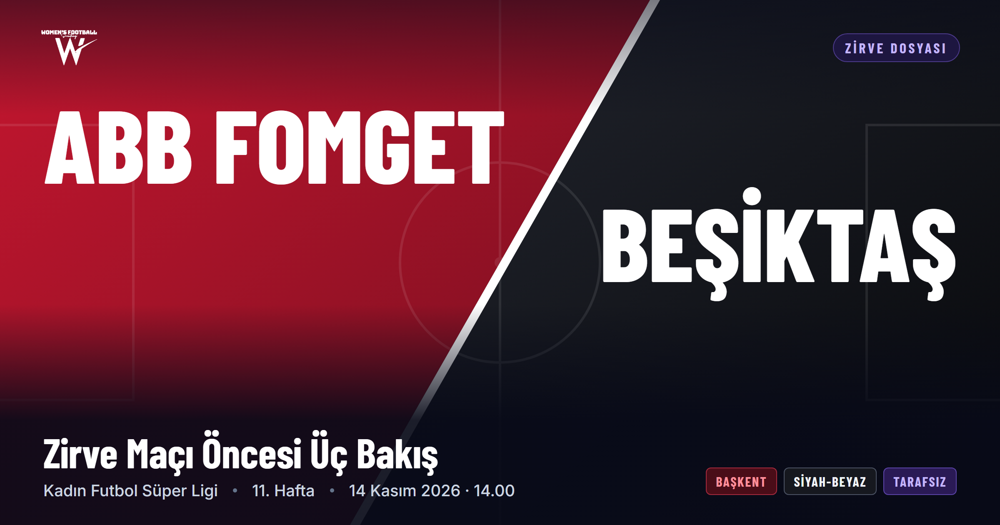
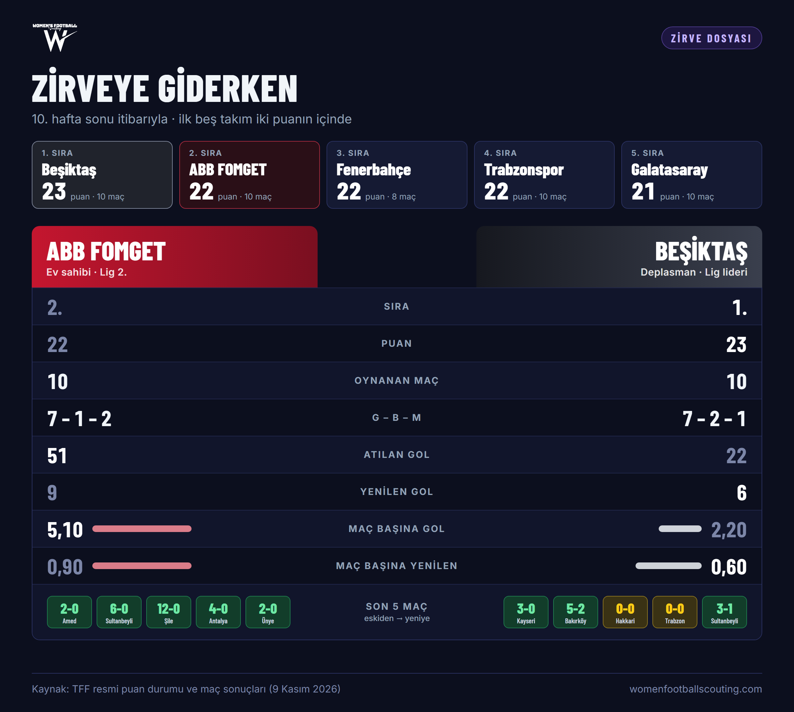

Zirve Maçı Öncesi Üç Bakış: ABB FOMGET – Beşiktaş
Lider Beşiktaş cumartesi günü, bir puan gerisindeki ABB FOMGET'in konuğu. Ligin en çok gol atan takımı ile en az gol yiyenlerinden birinin maçını üç pencereden sorduk: Başkent tribününden, siyah-beyaz tribünden ve WFS Analiz Masası'ndan.

Kadın Futbol Süper Ligi'nde 11. haftanın zirve maçı cumartesi saat 14.00'te Ankara'da oynanacak. Beşiktaş 23 puanla lider, ABB FOMGET 22 puanla hemen arkasında. İlk beş takım yalnızca iki puanın içinde: iki maçı eksik Fenerbahçe ile yenilgisiz Trabzonspor 22, Galatasaray 21 puanda. FOMGET 10 maçta 51 gol attı ve son altı maçını kazandı; Beşiktaş ise 10 maçta yalnızca 6 gol yedi.
Maça giderken aynı temaları üç ayrı pencereye sorduk: ev sahibi tribününden bir FOMGET taraftarına, deplasman tribünü olmadığı için maçı ekrandan izleyecek bir Beşiktaş taraftarına ve WFS Analiz Masası'na. Atmosfer, zirve yarışının hesabı, taktik düğüm, maçı çözecek anlar ve skor tahminleri aşağıda.
Yorumcularımız hakkında
İki taraftar yorumcumuz isimlerinin yayımlanmamasını istedi; onları maça baktıkları pencereyle tanıtıyoruz. Üçüncü bakış WFS Analiz Masası'nın.

Başkent Bakışı
ABB FOMGET'i tribünden takip eden yorumcumuz Batıkent'in atmosferini, zirve yarışının hesabını ve ev sahibinin planını anlatıyor.
Ankaragücü tribünlerinin ABB FOMGET'e verdiği destek bu maçı sıradan bir lig randevusundan çıkarıp “gizli bir derbiye” dönüştürüyor. Bir sürpriz olmazsa deplasman tribünü de olmayacak. Ankara'daki bu tribün enerjisi takımın saha içindeki direncini nasıl besliyor, Beşiktaş karşısında nasıl bir atmosfer bekliyorsun?
ABB FOMGET'e tahsis edilen ve bildiğim kadarıyla bir kadın futbol takımına tahsis edilen ilk saha olan Batıkent Futbol Sahası, tribün yapısı sebebiyle sahaya çok yakındır; boğucu bir ortam yaratır. Orada taraftar çekirdek çitleyip maç izleme niyetinde olmaz; doğrudan oyunun içine dahil olmak ister. Gerek bestelerle gerek lehine alınmasını beklediği kararlarda saha içine müdahil olmak ister. Ankaragücü tribünlerinin yıllardır ABB FOMGET'e verdiği o karşılıksız omuz, bu karşılaşmayı fikstürdeki sıradan bir 11. hafta maçı olmaktan çıkarıp gerçek bir Başkent-İstanbul derbisine dönüştürüyor.
Beşiktaş ile Ankaragücü arasındaki tribün gerilimi malum; bu enerjinin, kadın futbolunun kendine has fair-play çizgisini bozmadan sahaya muazzam bir desibel ve baskı olarak yansıyacağını düşünüyorum. Yarın saat 14.00'te başlama düdüğü çaldığında Beşiktaşlı oyuncular yalnızca 11 FOMGET futbolcusuna değil, her taç atışında ve her ikili mücadelede nefesini enselerinde hissedecekleri bir Ankara atmosferine karşı oynayacak. Biz bu kulübün şampiyonluk yürüyüşlerinde de Avrupa ön eleme maçlarında da o tribün itişinin maçı nasıl çevirdiğini defalarca gördük.
Henüz 11. haftadayız ama zirve yarışında puan kaybına tahammül yok. Bu maçtan çıkacak bir galibiyet ya da kayıp, sezon sonundaki şampiyonluk ve Avrupa kupalarına katılım hedefi açısından nasıl bir psikolojik kırılma yaratır?
Puan cetveline yüzeysel bakan biri olsaydım “Henüz 11. haftadayız, önümüzde çok maç var” der, maçı televizyondan keyifle izlerdim. Ama Kadın Futbol Süper Ligi'nin bu sezonki matematiği buna izin vermiyor; bu kadar iyi giden bir takımı desteklemeden ben de evimde rahat edemem. Şu an Beşiktaş 23 puanla lider, biz 22 puanla ikinci sıradayız. Hemen arkamızda iki maçı eksik 22 puanlı Fenerbahçe var; namağlup 22 puanlı Trabzonspor ve 21 puanlı Galatasaray da ensemizde. Yani ilk beş takım yalnızca 2 puana sıkışmış durumda.
Bu tabloda doğrudan rakibimize kaybedeceğimiz bir maç yalnızca 3 puan kaybı değil; hem liderliği teslim etmek hem de olası ikili averajda ve Avrupa bileti yarışında geri düşmek demek. FOMGET olarak son yıllarda UWCL ve UWEC elemelerinde edindiğimiz Avrupa alışkanlığını takım ve taraftar olarak sürdürmek zorunda hissediyoruz. Ankara'nın iki değerli takımı var; birini desteğimizle Avrupa'ya göndermek, diğerini de ligde tutmak istiyoruz. İstanbul takımlarına karşı evimizde oynadığımız bütün maçlar bizim için çok önemli. Yarın kazanacağımıza inanıyorum. Kazanırsak zirveyi devralıp rakiplere “Ankara'dan çıkış yok” mesajını vereceğimizi düşünüyorum.
Başkent'te oynanan kritik maçlarda FOMGET'in oyun karakteri ve fiziksel direnci genelde belirleyici oluyor. Beşiktaş'ın pas oyununu ve merkez üstünlüğünü bozmak için ev sahibinin en büyük kozu ne olacak?
Ligin ilk 10 haftasındaki istatistikler iki takımın karakterini net biçimde ayırıyor: Beşiktaş 10 maçta sadece 6 gol yiyerek ligin en kapalı ve kontrollü savunma kurgularından birini kurdu; biz ise 10 maçta 51 gol atarak maç başına 5,1 gol ortalaması yakaladık ve +42 averajla ligin en üretken hücum makinesiyiz. Beşiktaş'ın merkezde oyunu soğutan, topa sahip olup tempoyu düşüren planını kırmak için en büyük kozumuz, zaman zaman yapacağımız ön alan presi ve geçiş hızımızla onları vurmak; vurduktan sonra da topun hâkimiyetini ele geçirip daha fazla gol atmak olacak.
Misa Kuč'un üçüncü bölgedeki yüksek tecrübesi, Miray Cin'in oyun aklı ve genç Tošković'in beklenmedik toplu oyunları bizi ön alanda başarıya ulaştıracak kalitede. Orta sahayı domine edecek Mijatović ve Sabajo bize iki yönlü oyunda başarıyı getirecektir. Savunmacılarımız zaten milli seviyede, en iyi oyunculardan. Oyunu hem atletik hem akılcı yönetebilecek isimlere sahibiz. Beşiktaş'ın geriden oyun kurma konforunu bozacağımızı, orta sahada üstünlük kuracağımızı ve stoper-bek arasındaki boşlukları çok iyi değerlendireceğimizi düşünüyorum.
Tabii Beşiktaş savunmasında bizim yapımızı çok iyi tanıyan eski oyuncumuz Yana Derkach ve kalede Selda Akgöz var; ama unutmasınlar, biz de onların eksiklerini iyi biliyoruz. Onların ve savunma hattının, sürekli yön değiştiren hücumlarımızla başa çıkamayacağını düşünüyorum.
İki şampiyonluk adayının erken dönemdeki kapışmasında “önce kaybetmeyeyim” tedirginliği mi ağır basar, yoksa FOMGET kendi sahasında rakibin üzerine gidip erken golle oyunu koparmaya mı çalışır?
ABB FOMGET'in genetiğinde kendi sahasında “önce bir puanı cebime koyayım” mantığı hiçbir zaman olmadı. Son 5 lig maçının tamamını kazanmış, geçen hafta zorlu şartlardaki Ünye deplasmanından 2-0 gibi net bir skorla dönmüş, formunun zirvesindeki bir takımdan bahsediyoruz. Elbette ligin ilk haftalarında yaşadığımız 2 mağlubiyet ve 1 beraberlik bize büyük maçlarda savunma arkasına yapılan geçişlere dikkat etmemiz gerektiğini öğretti. Bu maçlardan sonra yapılan transferler de bu oyunu düzeltmeye ve geliştirmeye yönelikti.
Batıkent'te taraftarın itici gücüyle ilk 20 dakikada yüksek tempo ve boğucu bir baskıyla başlayacağımızı düşünüyorum. Bunu başaramazsak, iyi yaptığımız savunmayı biraz daha derinde kurup 30. dakikadan sonra hızlı geçiş oyununa döneriz diye düşünüyorum. Skora bağlı olarak oyunun genelinde de hücum geçişleri üzerine kurulu bir oyun oynayacağımızı düşünüyorum. Erken bulacağımız bir gol Beşiktaş'ı alıştığı kontrollü oyundan çıkmaya ve risk almaya zorlar; oyun açıldığında da hızlı geçişlerle, ligin en çok gol atan takımı olarak ibre tamamen bize döner.
Sence bu maçın kilidini duran toplar mı, bireysel bir yıldız performansı mı, yoksa orta saha savaşı mı çözer? Tribünden bakan biri olarak maç senaryonu ve skor tahminini alabilir miyiz?
Bu maçın kilidini ikinci toplar, hızlı oyuncular ve duran top organizasyonları çözecek diye düşünüyorum. Beşiktaş kapalı savunmayla merkezi daraltmaya çalışacaktır; bu kilidi açmak için hem kenar ortalarındaki kaliteye hem de dönen topları orta sahada süpürüp atağı tazelemeye ihtiyacımız var. Bunu ilk etapta başaramazsak onların üzerimize gelmesini beklemeliyiz. Maçın ilk yarısında Beşiktaş'ın direncini kıracağımızı, ikinci yarıda ise fiziksel üstünlüğümüz ve kulübe derinliğimizle skoru koparacağımızı öngörüyorum. Tribünden bakan bir FOMGET'li olarak tahminim: 2-0 ya da 3-1.
Siyah-Beyaz Bakış
Beşiktaş'ı yakından takip eden yorumcumuz deplasman yasağını, liderin kırılgan yanlarını ve Ankara'dan puanla dönmenin yolunu değerlendiriyor.
Ankaragücü taraftarlarının da tribünde olmasıyla Ankara deplasmanı Beşiktaş için ekstra gergin ve zorlu bir atmosfer vadediyor. Siz orada olamayacaksınız gibi duruyor. Siyah-beyazlı takım bu deplasman baskısını lehine çevirecek mental olgunluğa sahip mi?
Öncelikle şunu netleştirelim: biz bu maçı yerinde izleyemeyeceğiz ve bu durum rahatsız edici bir şekilde açıklandı. ABB'nin 11 Kasım'da yaptığı açıklamaya göre yeni Batıkent tesislerinde deplasman seyircisi için ayrılmış bağımsız bir tribün bölümü ve fiziki altyapı bulunmadığı gerekçesiyle maça alınmıyormuşuz. Bizim tesislerimizin fiziki şartlarının gerçekten uygun olmadığını biliyoruz; ama gayet iyi biliyorum ki onların tesisinde böyle bir durum yok. Nispet amaçlı yapılmış bir açıklama ve uygulama. Açıkçası Ankaragücü tribünlerinin varlığıyla bir nevi derbi atmosferine bürünen bir deplasmanda takımımızı tribünden destekleyememek bizim adımıza büyük eksiklik. Daha önce bizimle ALG Spor uğraşırdı, ondan önce Trabzon İdmanocağı… Hiçbiri yok artık; sıra FOMGET'e de gelecek…
Madalyonun diğer yüzünde şu var: Beşiktaş bu sezon 10 maçta sadece 6 gol yiyerek ligin en dirençli savunma kurgularından birini oluşturdu. Didem Karagenç hocanın saha içindeki taze tecrübesini saha dışına taşıması ve savunma hattındaki tecrübeli isimlerin soğukkanlılığı sayesinde takımın tribün gerginliğinden psikolojik olarak etkilenmeyeceğini düşünüyorum. Asıl mesele tribün baskısı değil, takımın top ayağındayken kendi oyun ezberini sahaya koyup koyamayacağı.
Kadın Futbol Süper Ligi'nde henüz 11. hafta oynanırken, doğrudan şampiyonluk ve Avrupa bileti rakibine karşı deplasmanda alınacak bir galibiyet sezonun geri kalanına nasıl bir mesaj verir?
Kâğıt üzerinde 23 puanla lideriz; ancak analitik bakan her Beşiktaş taraftarı bu liderliğin ne kadar kırılgan olduğunu, pamuk ipliğine bağlı olduğunu görüyor. Hemen arkamızda ligin bütün güçlü ekipleri yer alıyor ve puan farkı en fazla 2. Şu ana kadar zirvede olmamız dominant bir oyun gücünden ziyade rakiplerin birbirine takılmasından ve savunma disiplinimizden kaynaklandı.
Dolayısıyla yarın Ankara'da doğrudan rakibimize karşı alınacak bir galibiyet bize yalnızca 3 puan kazandırmaz; “bu şampiyonluk ve Avrupa yarışının gerçek favorisi biziz” deme hakkını da verir. Olası bir kayıpta ise Fenerbahçe'nin eksik maçlarıyla birlikte bir anda dördüncü sıraya kadar gerileme riskiyle yüzleşiriz. Bununla beraber bu maçta oynayacağımız oyunu görmemiz ve sindirmemiz gerekiyor. Çünkü daha önce iki iyi takıma karşı galibiyet alamadık ve oyunumuz hiçbir maçta bizi tatmin etmedi.
Beşiktaş'ın bu sezonki oyununu düşündüğünde, rakibin sert ve tempolu baskısına karşı seni en çok endişelendiren zaaf ne? Buna karşılık “bu maçı bize kazandırır” dediğin en güçlü yön hangisi?
Beni en çok endişelendiren nokta, küçük takımlara karşı kurduğumuz hâkimiyeti büyük maçlara yansıtamıyor oluşumuz; takımın, oyunun detay prensiplerinden ciddi biçimde uzaklaşmış bir oyun oynaması. İstatistik yalan söylemez: 10 haftada 22 gol atabildik; aynı sürede ABB 51, Galatasaray 46, iki maçı eksik Fenerbahçe ise 35 gol attı. Saha içine baktığımızda hatlar arası mesafelerin açıldığını, bunu kapatmak için şahsi ve anlık hamleler yapıldığını, üçüncü bölgede topsuz koşu çeşitliliğinin ve genişlik-derinlik dengesinin iç koridor boyunca kurulamadığını görüyoruz.
Hücum setlerimiz çoğu zaman bireysel ayaklara ya da duran toplara sıkışıyor; kulübeden gelecek yeni transferimiz Roksolana Kravchuk'un bu üretim kısırlığına nasıl bir çözüm getireceğini ise henüz bilmiyoruz. Daha da önemlisi, teknik heyetin çok dar bir rotasyona saplanıp kalması ve kadrodaki bazı oyunculara neredeyse hiç süre vermemesi hem fiziksel yıpranmayı artırıyor hem de bu oyunculara muhtaç olduğumuz anlarda maç ritmi kazanmaları için birkaç hafta beklememize yol açıyor.
Buna karşılık en güçlü yönümüz derin savunmadaki disiplinimiz, bloklar arasında kompakt kalabilme becerimiz ve kaleciden stopere kadar büyük maç tecrübesi yüksek omurgamız. Ayrıca kalecimiz hem ABB'yi iyi tanıyor hem de milli formayla Türkiye kalesini koruyan, ligin en iyi kalecisi.
Beşiktaş taraftarı zorlu deplasmanlarda takımını yalnız bırakmamasıyla bilinir. Kadın futbol takımının böylesine kritik bir Avrupa yolunda camiadan ve tribünden gördüğü desteği yeterli buluyor musun?
Beşiktaş taraftarı kadın futboluna her zaman ayrı bir kıymet verir; deplasman yasağı olmasaydı yarın Ankara'daki o küçük tribünü de siyah-beyaza boyayacağımızdan kimsenin şüphesi olmasın. Şimdi mecburen ekran başında, TFF'nin YouTube yayınından maçı takip edeceğiz.
Ama burada kanayan bir yaramıza değinmeden geçemem: maçları anlatan spikerlerin ve yayın ekibinin kadın futbolu ekosistemine, oyuncuların pozisyon profillerine ve sahadaki taktiksel kurguya bu kadar uzak olması izleme keyfini ciddi anlamda baltalıyor. İsimlerin yanlış telaffuz edildiği, oyuncuların özelliklerinin bilinmediği, oyunun taktiksel kırılmalarının okunamadığı bir anlatımla karşı karşıya kalıyoruz. Kadın futbolu sahada büyük bir emekle büyürken yayın ve anlatım kalitesinin bu emeğin çok gerisinde kalması taraftarın ekrana bağlanmasını da zorlaştırıyor.
Deplasmanda kontrollü ve sabırlı bir Beşiktaş mı görmek istersin, yoksa ilk düdükle oyunu rakip yarı sahaya yıkan baskın bir plan mı? Maç sonu skor tahminin nedir?
Mevcut oyun kurgumuzla ABB'ye karşı açık alan bırakarak önde basmaya çalışmak intihar olur; çünkü karşımızda ligin en hızlı geçiş yapabilen ve en çok gol atan takımı var. Bu yüzden deplasmanda sabırlı, merkezi kapatan, ABB'nin olası alan baskılarını doğru pas açılarıyla kırıp savunma arkasına sarkan bir plan bekliyorum. Kenarda bekleyen ve şimdiye kadar yeterince şans bulamayan dinamik isimlerin de maçın ikinci yarısında mutlaka oyuna dahil edilmesi şart. Oyunumuzda eksikler olsa da Beşiktaş'ın büyük maç refleksine ve savunma karakterine inanıyorum, inanmak istiyorum. Çok gollü bir düellodan ziyade, satranç gibi geçecek bir maçta galibiyet bekliyorum: 0-1 ya da 1-2.
Tarafsız Bakış
WFS Analiz Masası maçı olasılık hesabı, taktik düğüm ve baskı altında karar alan oyuncu profilleri üzerinden okuyor.
Henüz 11. haftada oynanan bu altı puanlık karşılaşma, sezon sonundaki şampiyonluk ve Avrupa bileti olasılık dağılımında ne kadarlık bir sapma yaratır? İki takımın risk-getiri optimizasyonu açısından beraberlik mi, yoksa galibiyet zorlaması mı daha rasyonel?
Puan cetveline baktığımızda ortada lineer bir lig yarışı değil, yüksek hassasiyetli bir sınır koşulu problemi görüyoruz. İlk beş takımın yalnızca 2 puanlık dar bir banda sıkıştığı ve Fenerbahçe'nin iki maç eksiğiyle teorik tavanının herkesten yukarıda olduğu bir dağılımda, doğrudan rakibe kaybedilen altı puanlık bir maç, sezon sonu şampiyonluk ve Avrupa kupası olasılık eğrisinde asimetrik bir sapma yaratır. İki takımın risk-getiri optimizasyonu ise birbirinden tamamen farklı çalışıyor.
Beşiktaş cephesinde maç başına 0,6 gol yiyen, düşük sapmalı bir savunma yapısı var. Oyunu kaosa ve yüksek tempoya açmak, sapmayı maç başına 5,1 gol atan FOMGET lehine büyütür. Bu nedenle Beşiktaş için en gerçekçi yaklaşım, önce savunma dengesini koruyarak 1 puanı garantiye almak olacaktır. Başarıyla uyguladıkları derin savunma anlayışıyla maçı savunma üzerinden domine etmeleri gerekiyor. Tabii hücumu da düşünmeli; düşük hacimli ama yüksek verimli geçiş fırsatlarını kovalamalı ve duran toplardan azami faydayı sağlamalılar.
ABB FOMGET cephesinde ise beraberlik, zirvenin kontrolünü eksik maçlarını oynayacak Fenerbahçe'nin insafına bırakmak anlamına gelir diye düşünüyoruz. Sahayı dolduracak taraftarın isteğiyle, hatta kuracağı baskıyla net biçimde hücum odaklı bir oyun oynamalı ve topa hâkim kalmalılar. Ev sahibi için gerçekçi strateji, Batıkent'in atmosferini arkasına alıp ilk 15 dakikada yoğun bir ön alan baskısıyla maçı koparmak olmalı. Beşiktaş'ı düşük riskli konfor alanından dışarı çıkarmamalı, onlara hücum etme şansı vermemeliler.
Saha içi yerleşim ve oyun planı açısından değerlendirdiğinizde, ABB FOMGET'in iç saha direnci ile Beşiktaş'ın topa sahip olma ve geçiş oyunu arasındaki taktiksel düğüm sahanın hangi bölgesinde çözülecek?
Bu maçtaki taktiksel düğüm iki ana konunun kesişiminde çözülecek: ikinci bölgeden topla çıkışlar ve iç koridor savunması.
Birinci senaryoda Beşiktaş geriden oyun kurarak yavaş yavaş rakip yarı sahaya yerleşmek isteyecektir. Hatlar arası mesafesi zaman zaman fazla açılan Beşiktaş'ın merkez orta saha oyuncuları baskı altında verimsizleşebiliyor. FOMGET'in Misa Kuč, Andjela Tošković ve Rasmata Sawadogo gibi hem atletik hem de baskıyı tetikleyen, yüksek disiplinli ön hattı Beşiktaş'ı Batıkent'in dar kenar çizgilerine doğru yönlendirip orada baskı tuzakları kuracaktır. Beşiktaş ikinci bölgede top kaybettiği an, FOMGET'in 5-8 saniye içinde sonuçlandırdığı dikey geçiş hücumlarıyla yüzleşmek zorunda kalır. Takımın bunu doğru yönetmesi ve konsantrasyon kayıplarına izin vermemesi gerekiyor.
İkinci senaryoda ise set hücumuna yerleşen FOMGET'e karşı Didem Karagenç'in organize ettiği kompakt Beşiktaş bloğu var. Burada kilit bölge, yani ceza sahası yayının önü ve iç koridorlar önem kazanıyor. Beşiktaş merkezi kapatıp FOMGET'i kenarlarda verimsiz bir pas dolaşımına ve zorlama ortalara itebilirse ev sahibinin 51 gollük hücum motoruna ciddi biçimde hasar verir. Ayrıca Beşiktaş'ın maçların son 20 dakikasındaki oyunu hep dikkatimizi çekti; ciddi bir direnç kaybına uğradıkları görülüyor. FOMGET'in kulübe derinliğini sahaya süreceği en kritik taktiksel kırılma aralığı da bu nedenle 70-90. dakikalar olacaktır.
Bu maçı izlerken odak noktanız ne olacak? Özellikle “gizli derbi” atmosferinin yarattığı yüksek bilişsel yük altında, hangi oyuncu profillerinin karar alma hızı ve soğukkanlılığı Avrupa seviyesi için belirleyici birer veri sunar?
Bu karşılaşmayı izlerken odak noktamız saf teknik kapasiteden ziyade yüksek baskı ve beşerî yük altında karar alma kalitesi olacak. Tribünün sahaya yakın olduğunu öğrendiğimiz Batıkent'te, iki yorumcumuzun da derbi kelimesini kullanması maçın gerginliğinin hissedileceği bir ortam olacağını gösteriyor. Böyle ortamlarda zaman ve mekân daralır; sıradan oyuncular panikle topu uzaklaştırmaya yönelirken Avrupa seviyesindeki profiller soğukkanlılığını korur. Sahada özellikle iki profil grubuna odaklanacağız.
Baskı altındaki oyun kurucular ve savunma liderleri. Başta eski takımına karşı sahaya çıkacak Selda Akgöz ve Beşiktaş'ın merkez orta sahaları olmak üzere, FOMGET'in yüksek hızla yaklaşan baskısı gelmeden önce ne sıklıkla çevre kontrolü yapacakları merak konusu. Topu ayağına aldığında ilk dokunuşla baskı yönünü kırıp dikey pas kanalı açabilen merkez orta sahalar ya da üstüne gelen baskıyı yönetip soğukkanlılıkla genişe, boştaki arkadaşına oynayabilen bir kaleci, milletlerarası seviye için doğrudan pozitif veri üretir ve oyunu beşerî olarak ele geçirir.
Dar alanda çözüm üreten hücum bağlantıları. FOMGET adına Misa Kuč ve Rasmata Sawadogo'nun, hatta Andjela Tošković ve belki Kaltrina Biqkaj'ın açık alan geçişlerindeki etkinliğini zaten biliyoruz. Asıl merak ettiğimiz, Beşiktaş'ın derin ve kalabalık savunma bloğu karşısında açık saha bulamadıklarında mikro alan farkındalığı ve topsuz koşu zamanlamasıyla kilit açıp açamayacakları; ya da bunu Miray Cin, Quinty Sabajo veya Milica Mijatović'in yapıp yapamayacağı. Çünkü kadın futbolunu izleyen herkes bilir: alan farkındalığı yüksek oyuncular kaleye aksiyon aldığında, ilkinde olmasa da ikincisinde gol şansı iki katına çıkar.
Tribünlerin varlığıyla yükselen tansiyon, teknik ekip gözüyle bakıldığında iki takımın oyun disiplinini ve saha içi iletişimini nasıl etkiler? Bu kaostan taktiksel avantaj çıkarmak mümkün mü?
Deplasman tribününün olmayacağını ve Ankaragücü taraftarlarının geleceğini herkes düşünüyor; biz de buna katılıyoruz. Onların yaratacağı tek taraflı, gürültülü baskı saha içindeki sözlü iletişimi devre dışı bırakabilir. Sahanın akustiğini bilmesek de, stoperlerin savunma çizgisini öne çıkarmak ya da adam paylaşımı yapmak için birbirine bağırması o desibelde duyulmayacaktır. Bu da takımların önceden çalışılmış görsel tetikleyicilere ve beden dili senkronizasyonuna ne kadar sadık kaldığını test eder. FOMGET'in daha şanslı olduğunu söyleyebiliriz: hem sahaya hem tribüne alışıklar. Beşiktaş için aynısını söyleyemeyiz.
Bu kaostan taktiksel avantaj çıkarmak da iki taraf için kesinlikle mümkün. Maçın ilk 15 dakikasına ve sert ikili mücadelelerin hemen sonrasına biz yüksek entropi anları diyoruz. FOMGET teknik ekibi, hücum bölgesinde kazanılan bir korner ya da taç sonrasında tribün uğultusunu arkasına alarak oyunu hızlandırıp Beşiktaş'ı üst üste hataya zorlayabilir. Taraftarın, eski oyuncuları Selda Akgöz'e ya da birkaç kez hata yapan bir oyuncuya karşı alacağı tavır da çok belirleyici olacaktır. Beşiktaş ise anti-tempo stratejisiyle, yani tansiyon yükseldiğinde duran topları yavaş kullanarak ve güvenli bölgede 60-90 saniye risksiz pas yaparak tribünün enerjisini emebilir. Beşiktaş'ın bunu düşünecek soğukkanlılığa sahip çok az oyuncusu var; ama neden olmasın?
Futbolseverlere tek bir cümleyle “Bu maçı mutlaka takip etmelisiniz, çünkü...” deseniz, cümlenin devamını hangi temel kırılma noktasıyla tamamlarsınız?
Bu maçı mutlaka takip etmelisiniz, çünkü ilk 10 haftada maç başına en çok gol atan takımlardan biri ile maç başına en az gol yiyen takımlardan biri, yeni ve kadın futboluna özgü bir stadyumda karşı karşıya gelecek. Bu maç yalnızca liderlik koltuğunu değil, sezon sonundaki Avrupa biletinin hangi oyun felsefesine gideceğini de şimdiden belirleyecek gibi duruyor. Tahminimiz: 2-1.
Üç Bakış, Üç Tahmin
Başkent tribünü farklı bir FOMGET galibiyeti, siyah-beyaz tribün tek farkla Beşiktaş galibiyeti bekliyor; Analiz Masası 2-1 FOMGET diyor.
İlk yarıda Beşiktaş'ın direncini kıran, ikinci yarıda fiziksel üstünlüğü ve kulübe derinliğiyle skoru koparan bir FOMGET bekliyor.
Çok gollü bir düello yerine satranç gibi geçecek bir maçta Beşiktaş galibiyeti bekliyor.
FOMGET galibiyeti. Kırılma aralığı olarak 70-90. dakikaları ve ev sahibinin kulübe derinliğini işaret ediyor.
Takım istatistikleri 2026-27 sezonunun ilk 10 haftasını kapsar (TFF resmi puan durumu ve maç sonuçları, 9 Kasım 2026). Yorumcuların görüşleri kendilerine aittir.